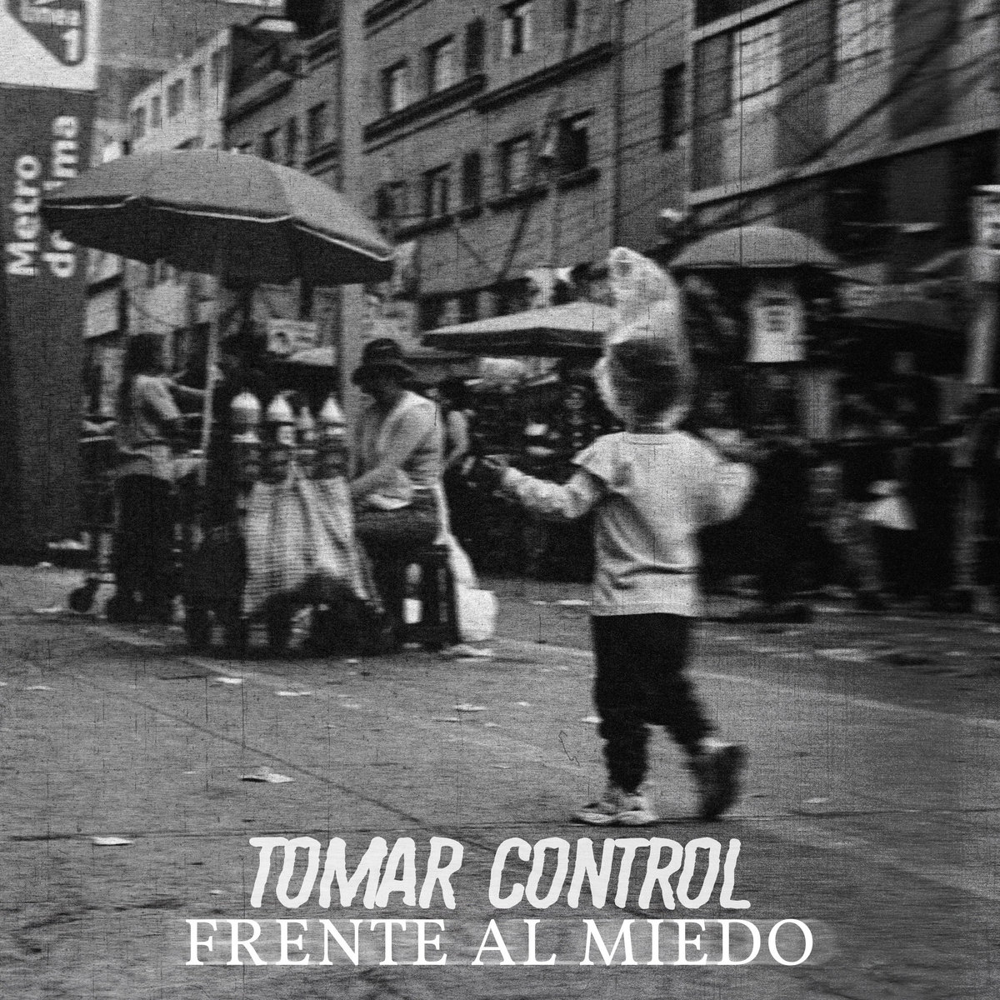

Inicio / Reseñas / Tomar Control — Frente al miedo

Álbum · 2025
Tomar Control lleva más de una década siendo probablemente uno de los mejores argumentos en contra de la idea de que el hardcore es un género exclusivamente masculino. Formada en Lima en 2014, la banda — integrada íntegramente por mujeres — ha construido su identidad sobre tres pilares que atraviesan tanto su música como su discurso: feminismo, straight edge y veganismo, enmarcado en una ética DIY que nació dentro de la propia escena hardcore limeña.
Frente al miedo es su tercer álbum de larga duración y, sonoramente, es el más diverso de su carrera hasta la fecha, sin abandonar el mensaje que siempre las ha caracterizado. Sus diez canciones — entre ellas “Extinción”, “Corazón” y “Marginal” — funcionan como un relato colectivo: tristeza, pérdida y desencanto que atraviesan a lo largo de la vida, y sobre todo, cómo se sigue adelante a pesar de eso.
Lo que hace especialmente relevante este disco es lo que vino después de su lanzamiento: Tomar Control salió por Refuse Records a presentarlo en una gira europea de casi treinta fechas repartidas en once países, incluyendo su debut en el Reino Unido. Es un recordatorio de que, aunque la escena hardcore peruana sigue siendo pequeña — la propia banda ha señalado que solo quedan unas pocas agrupaciones activas dentro de ese circuito específico — su capacidad de proyección internacional real no tiene nada de marginal.